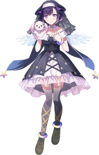
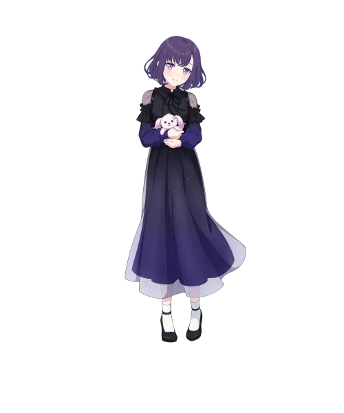

BanG Dream!의 등장인물. 무겐다이 뮤타입의 키보디스트.

이미지/mugendai_mewtype_miyako.webp
이미지/miyako_casual.webp전반적으로 보라색 눈+키보드 담당에 순한 인상, 어두운 보라색 머리카락을 띄는 점으로 인하여 시로카네 린코가 연상된다는 반응이 많다.
항상 가지고 다니는 강아지 모양의 손 퍼펫 인형은 마루 군이라고 불린다. 강아지처럼 생겼지만 마루 군은 개가 아니라고 한다.[1]
외모와 조용한 성격이라는 프로필 소개만 보면 린코처럼 마냥 청순가련하고 순한 성격일 것처럼 보이지만[2], 실제로는 겉치레나 착한 척, 인싸들을 불편하게 생각하는 편이며, 작중에서도 본인이 음지사람이라고 자각하고 있는 듯하다. 여타 만화가 캐릭터들에게서 많이 보이는 어두침침한 면을 탑재하고 있으면서 그래도 기본적으로는 부드럽고 인자한 편.
만화, 밴드, 학업 등을 겸임하면서도 할 수 있는 건 모두 할 것이며 찬스가 오면 또한 놓치지 않겠다고 말하는 점에서는 그 냐무와도 상당히 비견될 정도의 출중한 워커홀릭인 면을 가지고 있다. 다만 그것과는 별개로 멘탈이 그렇게까지 완강한 편은 아닌지라 따로 자신만의 힐링 공간을 마련하여 인형들이 가득한 서랍 속에 다이빙하는 경지에 이르렀다. 마지루루도 그렇고 깜찍한 인형들 속에 파묻히는 걸 좋아하는 것으로 보면, 원초부터는 노노카처럼 꽃밭에서 뒹굴며 살던 동화 속 성격이었던 걸지도 모른다. 사회가 망친 암흑진화 노노카 아예 인형을 붙들어매고 옹알이 수준의 회화를 구사하다가도, 멘탈케어를 끝내고 자신이 오늘 해야 할 일을 단번에 정리 후 처리하는 모습은 매우 모범적인 어른의 표본으로 보일 정도.
그림을 그리는 작업 환경의 경우, 작중 아라레가 팬심으로 언급한 내용과 같이 선을 매우 중요시 여기는 것으로 보이는데, 본인이 그리는 그림에 감정이입을 하며 작업하는 스타일인 듯하다. 캐릭터의 웃는 표정을 그릴 때는 본인도 함박웃음을 짓는다거나 화난 표정에는 화를 내고 슬픈 표정에는 마찬가지로 슬퍼한다.
학업에서는 의외로 온라인 강의가 아니라 제대로 학교 또한 다니고 있는 것으로 나오는데, 수업시간에도 대놓고 책상에 타블렛을 두고 작업을 하고 있다. 다른 학생은 수업 중에 스트리밍을 하다가 선생님에게 혼을 당하는 데에 비해 딱히 미야코는 그런 거 없이 시험 문제에 나오니 메모해달라고 지적만 하는 정황으로 보면, 이미 학교에서도 숙지하고 있고 클래스메이트도 다 알고 있는 듯하다.
음침계답게 자존감이 낮고 인정욕구가 강한 타입. 타인과 쉽게 친해지진 않지만 자신의 만화에 대해 좋게 평가해주면 너무나도 쉽게 마음을 연다. 완벽주의 기질이 강해 밴드도 만화도 학업도 뭐든 잘 해내기 위해 무리한다.
하지만 만화가답게 타인의 평가나 시선에 매우 예민한데다가 완벽주의로 인해 자신이 프로답지 않게 행동하면 가치가 없다는 강박에 시달리고 있기도 하다. 비올라의 수작으로 자신이 제안한 라이브로 뮤타입의 평판은 떨어지고 만화가로서도 제대로 못 해낸다고 느끼지만 주변은 여전히 자신을 탓하지 않자 스스로를 향한 자기혐오를 노노카에게 돌려버리고 끝내 뮤타입의 갈등을 유도하고 만다.
단순히 민감할 뿐만 아니라 우유부단하고 회피적이며 판단력이 떨어지다 보니 비올라의 수작에 쉽게 휘둘려버리기도 한다. 이 때문에 리츠의 설득에도 뮤타입과 비올라를 두고 망설이다 못해 아예 알고 싶지 않다는 반응을 보이면서 비올라에 대한 집착을 놓지 못하고 있으며, 급기야 아라레에 대한 험담을 해버려 비올라의 녹음기에 녹음이 되고 만다.
"뭐? 그 트롤러한테 초등학교 이름 남겨준 것도 감지덕지지. 효빈시 행정구역 담당자의 완벽한 혜안이다!"
— 혐성 에피소드 방영 이후, 도자초등학교 앞에서 인증샷을 찍는 팬들의 반응
효빈광역시 안천구 이십기동 관내에는 아주 조그마한 자연마을인 '도자마을(都子마을)'과 그 이름을 딴 '도자초등학교'가 있다. 기막히게도 이 한자 '도자(都子)'는 버츄얼 걸즈 밴드 프로젝트 무겐다이 뮤타입의 키보디스트 후지 미야코(藤 都子)의 이름 한자와 완전히 일치한다!
초기 팬덤의 반응은 동정론이 우세했다. 다른 멤버들(미야나가 노노카-궁영동, 센고쿠 유노-천석동, 나카마치 아라레-중정동)은 큼지막한 '동(洞)' 단위의 지명 전체를 자신의 영지로 꿰찬 반면, 미야코 혼자만 동 단위도 아니고 이십기동 구석의 자그마한 자연마을과 초등학교 이름으로만 남아있었기 때문이다. 팬들은 "미야코만 취급이 너무 박한 거 아니냐", "행정 편의주의의 희생양이다"라며 안타까워했다. 물론 미네츠키 리츠는 저 멀리 시골 깡촌인 봉월면으로 떨어졌지만, 걘 초반엔 밴드 정식 멤버가 아니었으니 참작의 여지라도 있지
그러나, 무겐다이 뮤타입 애니메이션 7~9화가 방영되자 여론은 180도 뒤집혔다. 미야코가 동료인 노노카에게 폭언을 날리고, 악역인 비올라에게 홀려 아라레의 험담을 하는 등 밴드에 엄청난 민폐를 끼치는 역대급 혐성(...) 트롤링 에피소드가 전파를 탄 것이다. 이 충격적인 행적을 본 팬덤은 태세를 급전환했다.
현재 팬덤에서는 "저런 혐성 트롤러한테는 초등학교 이름 하나 남겨준 것도 감지덕지다", "효빈시 행정구역 명명자의 미래를 꿰뚫어 본 완벽한 혜안"이라며 이 상황을 매우 유쾌한 밈으로 소비하고 있다. 불쌍한 취급을 받던 도자초등학교는 이제 "트롤러 미야코의 참회소"라는 묘한 컨셉의 밈이 붙어, 보라색 굿즈를 든 오타쿠들이 교문 앞에서 장난스럽게 인증샷을 찍고 가는 새로운 서브컬처 성지로 부상했다.
내용 추가가 필요합니다.
| 인물 | 부르는 호칭 | 불리는 호칭 |
|---|---|---|
| 1인칭 | 나(私) | |
| 나카마치 아라레 | 나카마치 씨(仲町さん)→아라레 씨(あられさん) 아라레 쨩(あられちやん) | 야코 선생님(夜子先生), 미야코 씨(都子さん) 먀 쨩(みゃーちゃん) |
| 미야나가 노노카 | 미야나가 씨(宮永さん) 노노 쨩(ののちゃん) | 미야코 쨩(みやこちゃん) |
| 미네츠키 리츠 | 미네츠키 씨(峰月さん) 릿 쨩(りっちゃん) | 미야코 씨(都子さん) 미야코 쨩(みやこちゃん) |
| 센고쿠 유노 | 센고쿠 씨(千石さん) 유노 쨩(ユノちゃん) | 후지 씨(藤さん) 미야코(都子) |
가수: 후지 미야코
가수: 후지 미야코
가수: 후지 미야코
가수: 후지 미야코
특이사항으로 반주는 헬로, 해피 월드!가 커버한 해피☆머티리얼의 반주를 그대로 사용했다.
가수: 후지 미야코
가수: 후지 미야코
가수: 후지 미야코
BanG Dream! YUME∞MITA
6화부터 비중을 얻으며 리츠가 페어리 부케를 나가자 비올라는 다음 타겟을 미야코로 정하고 접근한다. 미야코는 비올라가 자신의 팬이라고 하자 금방 넘어가 비올라에게 푹 빠지고 그녀의 제안에 따라 무겐다이 뮤타입의 라이브를 제안한다.
7화에서 라이브는 성공리에 마무리되었음에도 인터넷 상에선 비올라의 수작으로 인해 페어리 부케를 향한 동정과 뮤타입에 대한 비난으로 가득했고 미야코는 이해할 수 없어 혼란스러워하다가 아라레에게 카페에서 이야기를 꺼낸다. 그러나 비올라가 또 다시 난입하고 트라우마로 인해 아라레가 공격적으로 나오자 미야코는 되려 비올라가 최고의 팬이라고 비올라의 편을 들며 아라레와 어색해진다.
8화에선 아라레와의 갈등, 뮤타입이 자신 때문에 라이브를 해서 논란에 휩싸였다는 죄책감으로 멤버들을 피하지만 노노카는 그런 미야코를 걱정해 계속 격려해준다. 하지만 인터넷 여론은 여전하고 만화가로서도 제대로 못 해낸다고 느끼자 압박에 시달리고 끝내 자신을 위로해주려는 노노카에게 당신이 싫다는 폭언까지 날려버린다.[9] 이를 본 유노가 밴드를 그만두겠다고 한다.
9화에선 여전히 자신을 책망하지 않는 멤버들의 눈치를 보며 갈등하다가 또 다시 비올라에게 연락한다. 비올라에게 휘말려 날조 영상만을 보고 아라레를 험담하며 비올라를 옹호하는데 비올라는 녹음기를 통해 미야코의 말을 녹음하고 있었다. 이후 리츠가 미야코에게 비올라의 진실을 이야기해도 쉽사리 믿지 않으며 알고 싶지 않다고 도피해버린다.
내용 추가가 필요합니다.
애니메이션 7~8화에서 비올라에게만 빠져 아라레와 비올라의 갈등 당시 비올라의 편을 든 것과 자신을 위로해주려는 노노카를 향해 폭언을 날린 것으로 인해 부정적인 논란이 나오기 시작했다.
다만 7화에서 비올라의 편을 든 것은 미야코의 입장에선 참작의 여지가 있는 게 비올라가 워낙 철저한 조사로 미야코의 팬을 자칭한데다가 당시 상황 상 비올라는 아라레와 비올라 사이의 과거 내막을 모른 채 아라레가 일방적으로 비올라를 몰아세운 것처럼 보였기 때문.[10]
그러나 8화에서도 아라레에게 정확한 사정을 묻거나 해명을 요구하기보단 회피적 태도를 보이고 여전히 비올라에게 푹 빠져있는 모습을 보인데다가 결정적으로 자신을 진심으로 위로해준 노노카를 향해 폭언을 날린 건 미야코의 잘못이 컸다.[11] 이로 인해 유노가 밴드 탈퇴를 선언하는 등 밴드 갈등의 원인이 되고 말았다.
9화에서는 결국 비올라에게 휘말려 비올라가 올린 날조 영상만으로 아라레에 대한 험담을 늘어놓고 리츠가 비올라에 대해 솔직히 전하며 미야코에 대해 더 알고 싶다고 했음에도 여전히 비올라에 푹 빠져 "리츠가 말하는 비올라가 어떤 사람인지는 알겠지만 나는 알고 싶지 않다."라며 현실을 외면하는 회피적 태도를 보인다. 게다가 비올라가 미야코의 아라레에 대한 험담을 녹음하는 바람에 더 큰 갈등이 생길 것이 우려되는 상황.